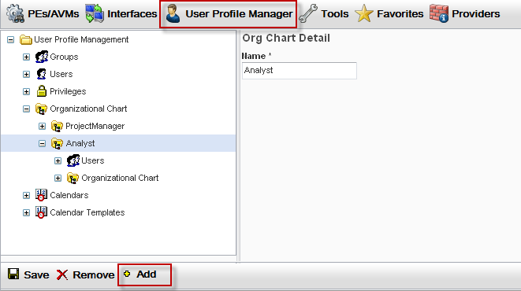
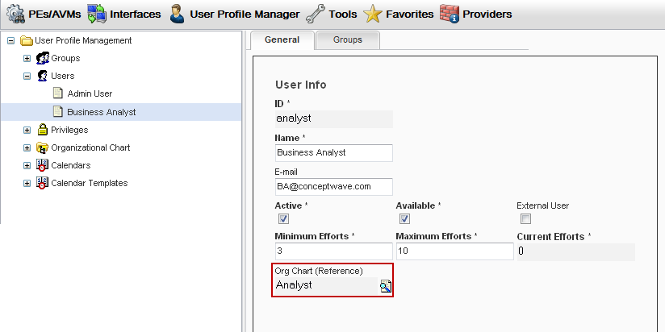
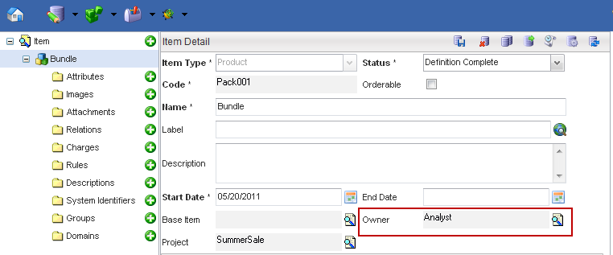

Catalog Designer provides the Catalog Domains feature that limits access of a catalog object instance (or record) to the users associated with that record. The users can be associated to a position in the Organizational Chart and a position can be associated with a Domain or Owner on an instance or record. An Organizational Chart position listed for a particular record will limit the access of the users with the same position or higher within the Organizational Chart to edit/modify and view the record. Only the users assigned to the same position (or a higher position) as that specified by the Domain or Owner fields have access to the data. These users must still have the appropriate Catalog Permissions to the Catalog Object.
Whenever a Catalog object instance is created, an Owner is assigned to the instance. This Owner represents the position within the Organizational Chart of the user who created the record. Only other users with the same position or higher position within the Organizational Chart have access to this instance. For each object instance, it is also possible to assign access to a record for users with different positions within the Organizational Chart. This is done with the Domain feature by listing positions in the Domain Org Chart Name.
The Organizational Chart positions are defined and binded to a user within the System Administration application. Within the Catalog Designer, the association between the object instance and positions within the Organizational Chart are created.
In the System Administration application, the Organizational Chart positions can be created and can be bound to a user. The User Profile section of the System Administration Application User Guide contains more information on the Organizational Chart. This section describes the steps that bind a position to a user within the System Administration application.
|  |
|  |
When an object instance is created in the Catalog Designer, the user's Organizational Chart position is added to the Owner field. This limits access to this record to only the users sharing the same position or higher in the Organizational Chart. Users having the same position or higher within the Organizational Chart will have access to this record (with the proper permissions). Other users will not have any access to this record regardless of permissions. If the Owner field is left blank then all users have access to this record.
Below is an example of an Item instance "Bundle", that was created by a user with an Analyst position. Only the user with the Analyst position or a higher position will have access to this record.
|  |
In the Domains folder, the user is able to add more positions to restrict access to this record. Positions added here will restrict access to this record to the users with the same position or higher in the Organizational Chart. If both the Owner field and the Domain Org Chart Name field are left blank, then all users have access to this record - access to this record is not restricted. For the Domains tab, the table below explains the functions:
| Function | Description |
|---|---|
| Add | Launches the Organizational Chart finder to select a position to be added to the Domain Org Chart list. |
| Delete | Deletes the selected position from the Domain Org Chart list. |
| Detail | Launches the Organizational Chart finder with the selected position. |